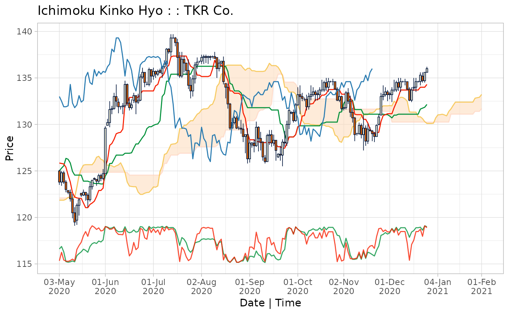
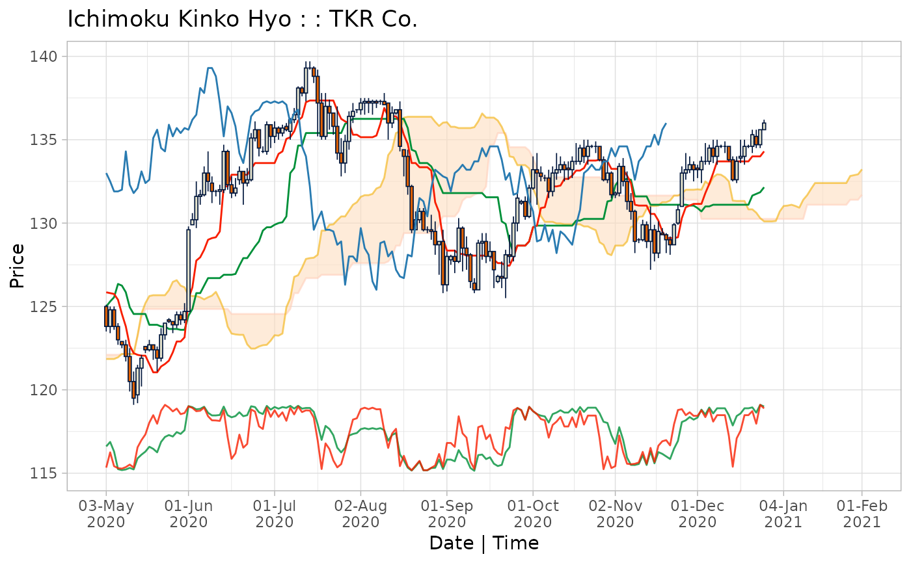

Plot Ichimoku Kinko Hyo cloud charts from ichimoku objects.
Arguments
- x
an object of class ‘ichimoku’.
- window
(optional) a date-time window to subset the plot, in ISO-8601 compatible range strings of the format used for ‘xts’ objects, for example "2020-02-15/2020-08-15" or "2020-02-15/", "/2020-08" or "2020-07".
- ticker
(optional) specify a ticker (or other text) to include in the chart heading. If not set, the ticker saved within the ichimoku object will be used.
- subtitle
(optional) specify a subtitle to display under the chart title.
- theme
[default 'classic'] with further choices of ‘dark’, ‘mono’, ‘noguchi’, ‘okabe-ito’ or ‘solarized’. Alternatively, supply a vector of 12 colour values (hex codes or names) as a user-defined theme.
- strat
[default TRUE] if the ichimoku object contains a strategy, the periods for which the strategy results in a position will be shaded, and the strategy printed as the chart subtitle (if not otherwise specified). Set to FALSE to turn off this behaviour.
- type
[default 'none'] type of sub-plot to display beneath the ichimoku cloud chart, with a choice of ‘none’, ‘r’ or ‘s’ for the corresponding oscillator type, and ‘bar’ or ‘line’ for custom plots.
- custom
(optional) character string (containing a regular expression) matching the column name of the variable to be displayed as sub-plot. Specify
type = 'bar'ortype = 'line', otherwise other type settings will take precedence.- ...
additional arguments passed along to the print method for ‘ggplot’ objects.
Value
The ichimoku object supplied (invisibly). The requested plot is output to the graphical device.
Details
This function is an S3 method for the generic function plot() for class ‘ichimoku’. It can be invoked by calling plot(x) on an object ‘x’ of class ‘ichimoku’.
For further details please refer to the reference vignette by calling:
vignette("reference", package = "ichimoku")
Examples
cloud <- ichimoku(sample_ohlc_data, ticker = "TKR")
plot(cloud)
 plot(cloud, window = "2020-05-01/2020-12-01", theme = "dark")
plot(cloud, window = "2020-05-01/2020-12-01", theme = "dark")
 plot(cloud, window = "2020-05/", ticker = "TKR Co.", theme = "noguchi", type = "s")

plot(cloud, window = "/2020-11-02", subtitle = "Sample Price Data", theme = "mono", type = "r")
kumo <- ichimoku(sample_ohlc_data, ticker = "TKR", keep.data = TRUE)
plot(kumo, window = "2020-05/", theme = "solarized", type = "bar", custom = "volume")
plot(cloud, window = "2020-05/", ticker = "TKR Co.", theme = "noguchi", type = "s")

plot(cloud, window = "/2020-11-02", subtitle = "Sample Price Data", theme = "mono", type = "r")
kumo <- ichimoku(sample_ohlc_data, ticker = "TKR", keep.data = TRUE)
plot(kumo, window = "2020-05/", theme = "solarized", type = "bar", custom = "volume")
 plot(kumo, window = "2020-05/", theme = "okabe-ito", type = "line", custom = "volume")
plot(kumo, window = "2020-05/", theme = "okabe-ito", type = "line", custom = "volume")